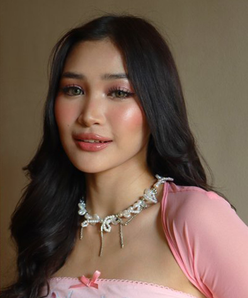
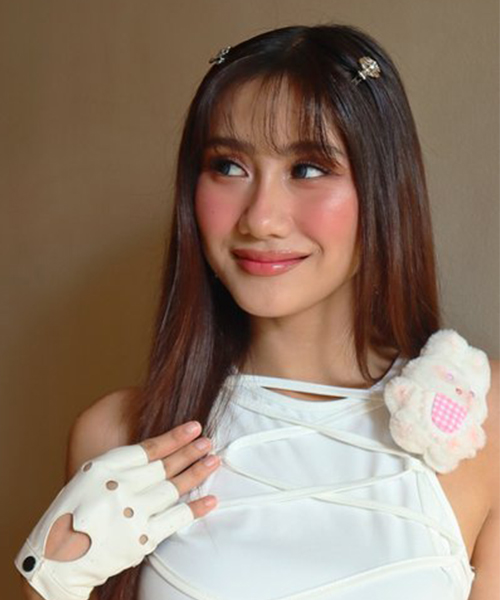
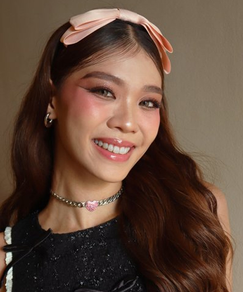

Filipino pop phenomenon BINI features 8 multi-talented members, Aiah, Colet, Maloi, Gwen, Stacey, Mikha, Jhoanna, and Sheena. The girls have quickly become the biggest female Filipino artist in history, and second biggest artist overall in the Philippines, holding both the #1 & #2 spots on the top Filipino music charts simultaneously with the hits “Salamin, Salamin” and “Pantropiko.”
BINI's sound is shaped by homegrown artists and global sensations alike. On the heels of their unprecedented growth in socials and in streaming listenership (30M +), the girls recently sold out their “BINIverse” tour in record-breaking time, and have been heralded as one of Teen Vogue's 2024 Girl Groups to watch!


